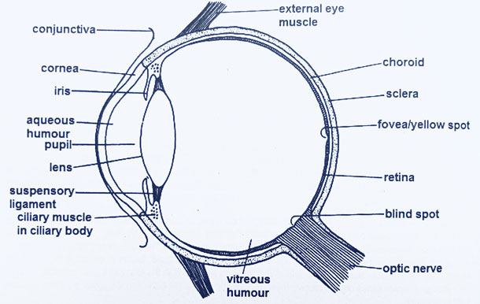

By the end of this lesson, you should be able to:

Vertical section of the human eye
The human eye is a complex organ responsible for vision. It consists of several key structures:
| Rods | Cones |
|---|---|
| Responsible for vision in dim light (scotopic vision). | Responsible for vision in bright light (photopic vision) and color vision. |
| More sensitive to light. | Less sensitive to light. |
| One type exists. | Three types exist (sensitive to red, green, and blue light). |
| Located mostly in the peripheral regions of the retina. | Located mostly in the fovea of the retina. |
| More numerous. | Less numerous. |
| Photosensitive pigment is rhodopsin. | Photosensitive pigments are iodopsins. |
| Low visual acuity. | High visual acuity. |
| Rapid regeneration of rhodopsin. | Slower regeneration of iodopsins. |
NB: The cornea and lens have no direct blood supply since a network of blood capillaries will impair their ability to focus light.
The mammalian eye is a complex organ responsible for vision. It consists of several key structures, including the cornea, sclera, choroid, iris, pupil, lens, retina, optic nerve, aqueous humor, and vitreous humor. The eye is nourished by the choroid and diffusion through the aqueous humor. It is protected by eyelids, eyelashes, conjunctiva, tears, the bony orbit of the skull, iris, and a layer of fat surrounding the eye.
1. Describe the structure of the mammalian eye and its key components.
2. How is the eye nourished?
3. How is the eye protected?